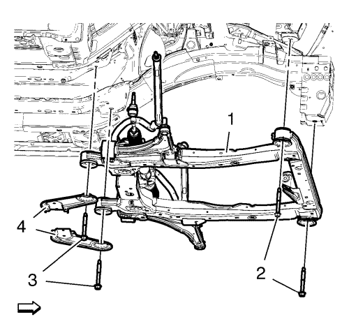
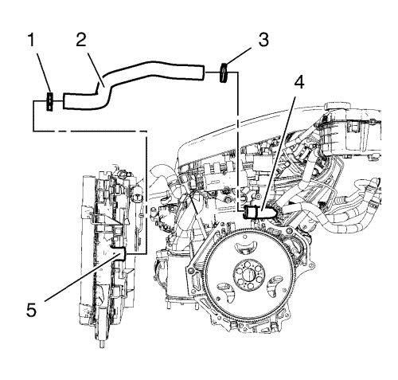

Sustitución del motor — Cambio manual
Herramientas especiales
| • | CH-807 Tapones de cierre |
| • | EN-6015 Tapones de cierre |
| • | CH-49289 Bastidor de centrado |
| • | CH-49290 Herramienta de soporte del motor |
Si desea informarse sobre herramientas regionales equivalentes, consulte Herramientas especiales.
Procedimiento de desmontaje
- Desmonte el tornillo inferior del eje intermedio de la dirección. Consultar Sustitución del eje intermedio de la dirección .
- Abra el capó.
- Recubra el agente frigorífico. Consultar Recuperación y recarga del agente frigorífico .
- Desconecte el cable negativo de la batería. Consultar Desconexión y conexión del cable negativo de la batería .
- Para vehículos con servodirección eléctrica:
| • | Retire el cable positibo de la servodirección eléctrica y la tuerca (1) del bloque de fusibles (4) |
| • | Retire el cable negativo y positivo de la servodirección eléctrica (2) y la tuerca (3). |
- Desmonte la bandeja de la batería. Consultar Sustitución de la bandeja de la batería .

- Desmonte la cubierta del bloque de fusibles del compartimento delantero (1).
- Afloje los 3 tornillos del bloque de fusibles del compartimento delantero (1).
- Suelte los 4 clips de soporte del bloque de fusibles del compartimento delantero (2) y (3), y levante el bloque de fusibles un poco.

Nota: Los enchufes del mazo de cables deben quedar en la parte inferior (4) del bloque de fusibles del compartimento delantero.
- Afloje por completo los 3 tornillos del bloque de fusibles del compartimento delantero (1) mientras se levanta el bloque de fusibles hasta que se pueda extraer de los 3 enchufes del mazo de cables (3), (5) y (6).

- Desmonte el enchufe del mazo de cables del ECM (1) de la parte inferior del bloque de fusibles del compartimento delantero.
- Desemborne el enchufe del mazo de cables del ECM (2) y suéltelo del clip de soporte (3).

- Retire las 2 tuercas de masa (1) y aparte los 2 mazos de cables (2).
- Extraiga la carcasa del purificador de aire. Consultar
Sustitución del filtro de aire : 1.6L LDE, LXV y 1.8L 2H0 .
- Desmonte el panel del paragolpes delantero. Consultar Montaje y desmontaje del paragolpes delantero .
- Desmonte el conjunto de llanta y neumático delantero. Consultar Desmontaje y montaje de la rueda y el neumático .
- Vacíe el sistema de refrigeración. Consultar Drenaje y llenado del sistema de refrigeración .
- Desenganche el vaso de expansión del radiador.
- Aparte el vaso de expansión del radiador.
- Desmonte del cambio la palanca del cambio manual y el cable de la palanca selectora. Consultar Sustitución de los cables de la palanca selectora y de la palanca de cambio del cambio manual .
- Desmonte el tubo flexible de entrada del calefactor de la pared frontal. Consultar
Sustitución del tubo flexible de entrada del calefactor. : 2.0L Diésel LNP → 1.8L 2H0 .
- Desmonte el tubo flexible de salida del calefactor de la pared frontal. Consultar
Sustitución del tubo flexible de salida del calefactor : 2.0L Diésel LNP → 1.8L 2H0 .

- Desacople el tubo de vacío del servofreno (2) que va al colector de admisión (1).
- Para vehículos con el volante a la derecha: desacople el tubo de vacío del servofreno que va al servofreno. Consultar
Sustitución del tubo de vacío del servofreno : Volante a la derecha → Volante a la izquierda con bomba eléctrica → Volante a la izquierda .
- Colecte un recipiente recogedor bajo el vehículo.
- Desconecte el tubo delantero del cilindro del actuador del embrague. Consultar
Sustitución del tubo delantero del cilindro actuador del embrague : F40 y volante a la derecha → F40 y volante a la izquierda → D16, D20 y volante a la derecha → D16, D20 y volante a la izquierda .
- Desconecte, de la válvula de ventilación de emisión de vapores, el tubo de ventilación del depósito de combustible.
- Cierre los aireadores con los tapones de cierre CH-807.
- Desacople la tubería de alimentación de combustible del tubo de distribución de inyección de combustible.
- Cierre los aireadores con los tapones de cierre EN-6015.
- Para vehículos con servodirección hidráulica: Desmonte el tornillo del depósito del líquido de la servodirección.
- Para vehículos con servodirección hidráulica: Desenganche el depósito del líquido del servofreno y apóyelo en el motor.

- Desmonte la tuerca del tubo flexible del compresor y el condensador del A/C (1) del condensador del A/C (2).

- Desmonte la tuerca del tubo flexible del compresor y el condensador del A/C (1)del tubo flexible de refrigerante (2).
- Desmonte la tuerca del conjunto del tubo del evaporador del aire acondicionado del condensador del aire acondicionado.
- Desenganche del radiador el tubo flexible de salida.
- Elevar el vehículo y soportarlo de manera segura. Consultar Elevación y soporte en alto del vehículo .
- Retirar el protector de salpicaduras del habitáculo frontal. Consultar Sustitución del protector de salpicaduras del habitáculo frontal .
- Desmonte la varilla de la barra estabilizadora del amortiguador en los dos lados. Consultar Sustitución de la varilla de la barra estabilizadora .
- Desmonte de la mangueta la barra de acoplamiento exterior del varillaje de la dirección en los dos lados. Consultar Sustitución la barra de acoplamiento exterior del varillaje de la dirección .
- Desmonte de la mangueta el brazo de apoyo inferior delantero. Consultar Sustitución del brazo de apoyo inferior .
- Desmonte los ejes de las ruedas delanteras de los cubos de rueda. Consultar Sustitución del árbol impulsor de la rueda delantera - Lado derecho y Sustitución del árbol impulsor de la rueda delantera - Lado izquierdo .
- Desconecte los sensores de velocidad de la rueda en los dos lados.
- Suelte el mazo de cables del sensor de velocidad de la rueda del bastidor.
- Desemborne los 3 mazos de cables (1).
- Desmonte el tubo de escape delantero. Consultar
Sustitución del tubo de escape delantero : 2.0L Diésel LNP → LDE,LLU,LXT,LXV,L2W,2H0 .

Nota: El manual de montaje de SPX se suministra con la herramienta especial y también está disponible en línea directamente en SPX. Vaya a www.spxtools-shop.com.
- Coloque la herramienta de soporte CH-49290 (1) siguiendo las instrucciones del manual de instalación SPX.
- Apoye el bastidor base CH-904 en un gato.
- Apoye la herramienta de soporte CH-49290 en el bastidor base CH-904.

Nota: El manual de montaje de SPX se suministra con la herramienta especial y también está disponible en línea directamente en SPX. Vaya a www.spxtools-shop.com.
- Monte la herramienta de soporte CH-49290 (1) siguiendo las instrucciones del manual de instalación SPX.
- Desmonte el soporte del motor. Consultar Sustitución del soporte del motor .
- Desmonte el soporte izquierdo de la caja de cambios. Consultar Sustitución del soporte de montaje de la caja de cambios - lado izquierdo .

Nota: El manual de montaje de SPX se suministra con la herramienta especial y también está disponible en línea directamente en SPX. Vaya a www.spxtools-shop.com.
- Coloque el bastidor de centrado CH-49289 (1) siguiendo las instrucciones del manual de instalación SPX.
- Apoye el bastidor base CH-904 en un gato.
- Apoye el bastidor de centrado CH-49289 en el bastidor base CH-904.

Nota: El manual de montaje de SPX se suministra con la herramienta especial y también está disponible en línea directamente en SPX. Vaya a www.spxtools-shop.com.
- Instale el bastidor de centrado CH-49289 (1) siguiendo las instrucciones del manual de instalación SPX.

- Desmonte los pernos delanteros del bastidor (2)
- Desmonte los pernos traseros del bastidor (3)
- Desmonte los refuerzos del bastidor (4).
- Saque el bastidor (4) con la unidad del cambio del motor del vehículo.
- Desmonte el semieje derecho de la caja de cambios. Consultar Sustitución del árbol impulsor de la rueda delantera - Lado derecho .
- Desmonte el semieje izquierdo de la caja de cambios. Consultar Sustitución del árbol impulsor de la rueda delantera - Lado izquierdo .
- Para vehículos con servodirección hidráulica: Desmonte el tubo flexible de salida del depósito del líquido de la servodirección Consultar Sustitución del manguito de salida del depósito de líquido de la dirección asistida. .

- Elimine la abrazadera del tubo flexible de salida del radiador (3) del tubo de agua (4).

- Desmonte el tubo flexible de entrada del radiador (1) de la carcasa del termostato (5).
- Monte un cable adecuado en los 3 soportes de elevación del motor.
- Monte un mecanismo de elevación del motor adecuado en el cable.
- Extienda el mecanismo de elevación del motor hasta que el cable de acero se tense un poco.

- Extraiga el perno pasante del soporte de la caja de cambios de la parte delantera (1).

- Extraiga el perno pasante de montaje al soporte del cambio (1).
- Coloque la unidad del cambio del motor en un palé de madera.
- Afloje los 8 tornillos del cambio y desmonte 7 de ellos. Consultar Sustitución de la caja de cambios .
Nota: Es necesario un segundo técnico.
- Desmonte el último tornillo del cambio y el cambio.
- Monte el motor en un soporte de motor adecuado.
- Transfiera las piezas según sea necesario.
Procedimiento de montaje
- Desmonte el motor del soporte de motor.
- Coloque el motor en un palé de madera.
Nota: Es necesario un segundo técnico.
- Monte el cambio y un tornillo del cambio.
- Instale los 7 tornillos del cambio.
Precaución:Consulte Precaución con las fijaciones en la sección Prólogo.
- Apriete los 8 tornillos del cambio. Consultar Sustitución de la caja de cambios .
- Coloque la unidad del cambio del motor en el bastidor delantero.
- Monte el perno pasante de montaje al soporte del cambio (1) y apriételo hasta 100 N·m (74 lib. pie).
- Monte el tornillo pasante del soporte del cambio (1) y apriételo a 58 N·m (43 lib. pie).
- Desmonte el cable de los 3 soportes de elevación del motor.
- Monte el tubo flexible de entrada del radiador (2).
- Monte la abrazadera del tubo flexible de entrada del radiador (1) en la carcasa del termostato (5).
- Monte el tubo flexible de salida del radiador (2).
- Monte la abrazadera del tubo flexible de salida del radiador (3) en el tubo de agua (4).
- Para vehículos con servodirección hidráulica: Monte el tubo flexible de salida del depósito del líquido de la servodirección. Consultar Sustitución del manguito de salida del depósito de líquido de la dirección asistida. .
- Monte el semieje derecho de la caja de cambios. Consultar Sustitución del árbol impulsor de la rueda delantera - Lado derecho .
- Monte el semieje izquierdo de la caja de cambios. Consultar Sustitución del árbol impulsor de la rueda delantera - Lado izquierdo .

Nota: Los pernos de posicionado (1) del adaptador CH-49289 deben extenderse para guiarlos hasta los orificios de los bajos.
- Meta el bastidor (1) con la unidad del cambio del motor en el vehículo.
- Monte los refuerzos del bastidor (4).
- Monte los tornillos del bastidor delantero (2) Apriete sólo con la mano.
- Monte los pernos de refuerzo (3). Apriete sólo con la mano.
- Apriete los tornillos del bastidor trasero (2) y apriételos a 160 N·m (118 lib. pie).
- Apriete los tornillos del bastidor delantero (1) y apriételos a 160 N·m (118 lib. pie).
- Baje el bastidor de centrado CH-49289 (1) con el bastidor de base CH-904 y un gato hasta que pueda extraerse.
- Extraiga el bastidor de centrado CH-49289 del bastidor base CH-904.
Nota: El manual de montaje de SPX se suministra con la herramienta especial y también está disponible en línea directamente en SPX. Vaya a www.spxtools-shop.com.
- Desmonte el bastidor de centrado CH-49289 (1) siguiendo las instrucciones del manual de instalación SPX.
- Bajar el vehículo.
- Monte el soporte del motor. Consultar Sustitución del soporte del motor .
- Monte el soporte izquierdo de la caja de cambios. Consultar Sustitución del soporte de montaje de la caja de cambios - lado izquierdo .
- Elevar el vehículo
- Baje la herramienta de soporte CH-49290 (1) con el bastidor base CH-904 y un gato.
- Retire la herramienta de soporte CH-49290 del bastidor base CH-904.
Nota: El manual de montaje de SPX se suministra con la herramienta especial y también está disponible en línea directamente en SPX. Vaya a www.spxtools-shop.com.
- Desmonte la herramienta de soporte CH-49290 (1) siguiendo las instrucciones del manual de instalación SPX.
- Monte el tubo de escape delantero. Consultar
Sustitución del tubo de escape delantero : 2.0L Diésel LNP → LDE,LLU,LXT,LXV,L2W,2H0 .
- Emborne los 3 mazos de cables (1).
- Fije con clips el mazo de cables del sensor de velocidad de la rueda al bastidor.
- Conecte el sensor de velocidad de la rueda en los dos lados.
- Monte los ejes de las ruedas delanteras en los cubos de rueda. Consultar Sustitución del árbol impulsor de la rueda delantera - Lado derecho .
- Monte el brazo de apoyo inferior delantero en la mangueta. Consultar Sustitución del brazo de apoyo inferior .
- Monte la barra de acoplamiento exterior del varillaje de la dirección en la mangueta en los dos lados. Consultar Sustitución la barra de acoplamiento exterior del varillaje de la dirección .
- Monte la varilla de la barra estabilizadora en el amortiguador en los dos lados. Consultar Sustitución de la varilla de la barra estabilizadora .
- Monte el protector contra salpicaduras del compartimento delantero. Consultar Sustitución del protector de salpicaduras del habitáculo frontal .
- Compruebe el nivel de aceite del cambio. Consultar Revisión del nivel de aceite del cambio .
- Bajar el vehículo.
- Enganche el tubo flexible de salida del radiador en el radiador.
- Utilice una junta de sistema NUEVA. Consultar Sustitución de la junta tórica del aire acondicionado .
- Monte la tuerca del conjunto del tubo flexible del evaporador del aire acondicionado en el condensador del aire acondicionado y apriétela a 19 N·m (14 lib. pie).
- Utilice una junta de sistema NUEVA. Consultar Sustitución de la junta tórica del aire acondicionado .
- Monte la tuerca del tubo flexible del condensador y el compresor del A/C (1) en el condensador del A/C (2). Apriete la tuerca a 19 N·m (14 lib. pie).
Nota: Utilice una junta tórica nueva. Consultar Sustitución de la junta tórica del aire acondicionado .
- Utilice una junta de sistema NUEVA. Consultar Sustitución de la junta tórica del aire acondicionado .
- Monte la tuerca del tubo flexible del condensador y el compresor del A/C (1) en el tubo flexible del agente frigorífico (2). Apriete la tuerca a 19 N·m (14 lib. pie).
- Para vehículos con servodirección hidráulica: Enganche el depósito de líquido de la servodirección.
- Para vehículos con servodirección hidráulica: Monte el tornillo del depósito del líquido de la servodirección y apriételo a 9 N·m (80 lib. pulg.).
- Quite los tapones de cierre EN-6015.
- Acople el tubo de alimentación de combustible al tubo de distribución de inyección de combustible multipuerto.
- Quite los tapones de cierre CH-807.
- Conecte el tubo de ventilación del depósito de combustible en la válvula de ventilación de emisión de vapores.
- Desmonte el tubo flexible de salida del calefactor de la pared frontal. Consultar
Sustitución del tubo flexible de salida del calefactor : 2.0L Diésel LNP → 1.8L 2H0 .
- Conecte el tubo delantero del cilindro del actuador del embrague. Consultar
Sustitución del tubo delantero del cilindro actuador del embrague : F40 y volante a la derecha → F40 y volante a la izquierda → D16, D20 y volante a la derecha → D16, D20 y volante a la izquierda .
- Purgue el sistema de embrague hidráulico. Consultar Purga del sistema de embrague hidráulico .
- Rellene el depósito con líquido de embrague/frenos hasta el nivel máximo (MAX).
- Acople el tubo de vacío del servofreno (2) al colector de admisión (1).
- Para vehículos con el volante a la derecha: Acople el tubo de vacío del servofreno al servofreno. Consultar
Sustitución del tubo de vacío del servofreno : Volante a la derecha → Volante a la izquierda con bomba eléctrica → Volante a la izquierda .
- Monte el tubo flexible de entrada del calefactor en la pared frontal. Consultar
Sustitución del tubo flexible de entrada del calefactor. : 2.0L Diésel LNP → 1.8L 2H0 .
- Monte el tubo flexible de salida del calefactor en la pared frontal. Consultar
Sustitución del tubo flexible de salida del calefactor : 2.0L Diésel LNP → 1.8L 2H0
- Monte la palanca del cambio manual y el cable de la palanca selectora en el cambio. Consultar Sustitución de los cables de la palanca selectora y de la palanca de cambio del cambio manual .
- Enganche el vaso de expansión del radiador.
- Llene el sistema de refrigeración. Consultar Drenaje y llenado del sistema de refrigeración .
- Monte el conjunto delantero de neumático y llanta. Consultar Desmontaje y montaje de la rueda y el neumático .
- Monte el panel del parachoques delantero. Consultar Montaje y desmontaje del paragolpes delantero .
- Monte la carcasa del filtro de aire. Consultar
Sustitución del filtro de aire : 1.6L LDE, LXV y 1.8L 2H0 .
- Monte los 2 mazos de cables (2).
- Monte las 2 tuercas de masa (1) y apriételas a 9 N·m (80 lib. pulg.).
- Monte el enchufe del mazo de cables del ECM (1) en la parte inferior del bloque de fusibles del compartimento delantero.
- Conecte el enchufe del mazo de cables del ECM (2) y fíjelo en el clip de soporte (3).
Nota: Asegúrese de que los 3 enchufes del mazo de cables (3), (5) y (6) encajan perfectamente en el bloque de fusibles del compartimento delantero.
- Monte el bloque de fusibles del compartimento delantero (2) en la parte inferior (4) y ponga los tornillos (1) sin apretarlos.
- Fije el bloque de fusibles del compartimento delantero en los 4 clips de soporte (2) y (3).
- Apriete los 3 tornillos del bloque de fusibles del compartimento delantero (1) a 22 N·m (16 lib. pie).
- Monte la cubierta del bloque de fusibles del compartimento delantero (1).
- Monte la bandeja de la batería. Consultar Sustitución de la bandeja de la batería .
- Para vehículos con servodirección eléctrica:
| • | Monte el cable positivo de la servodirección eléctrica y la tuerca (1) en el bloque de fusibles (4) y apriételos a 9 N·m (80 lib. pulg.). |
| • | Retire el cable negativo y positivo de la servodirección eléctrica (2) y la tuerca (3) y apriételos a 10 N·m (89 lib. pulg.). |
- Conecte el cable negativo de la batería. Consultar Desconexión y conexión del cable negativo de la batería .
- Vacíe y llene el sistema de agente frigorífico. Consultar Recuperación y recarga del agente frigorífico .
- Compruebe el nivel de aceite y rellene con aceite de motor nuevo si es necesario.
- Cierre el capó.
- Monte el tornillo inferior del eje intermedio de la dirección. Consultar Sustitución del eje intermedio de la dirección .
| © Copyright Chevrolet. All rights reserved |